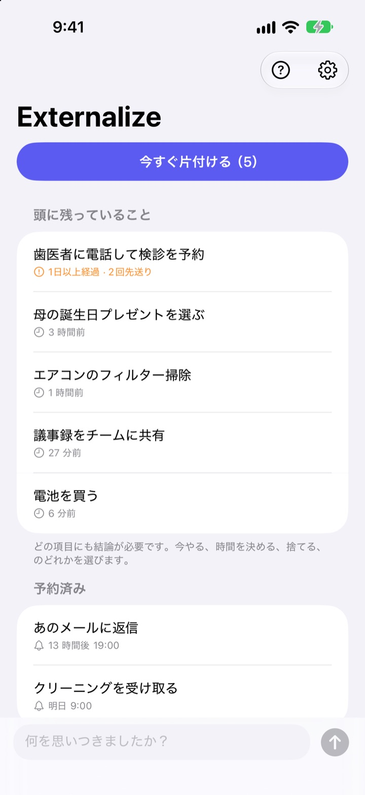
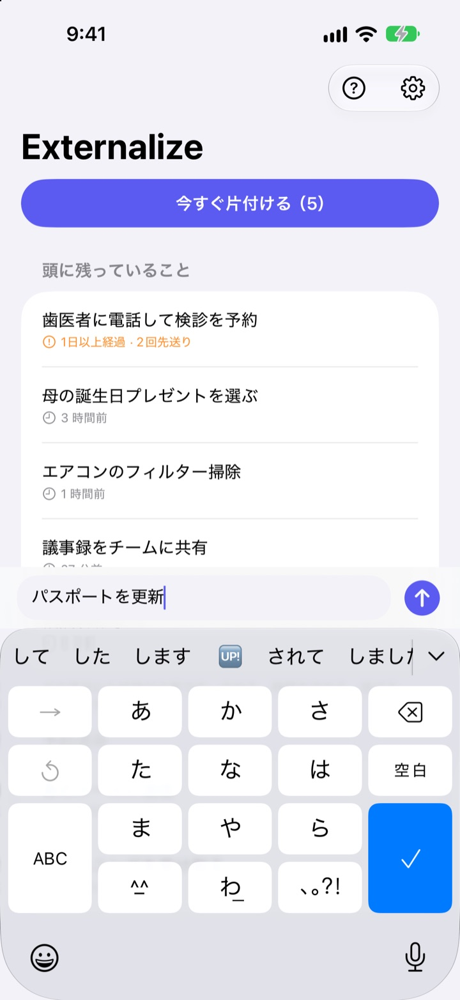
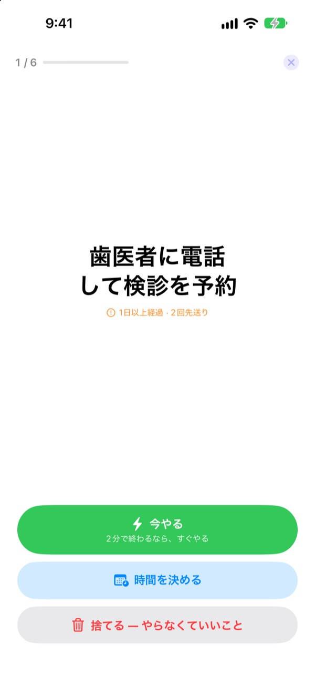
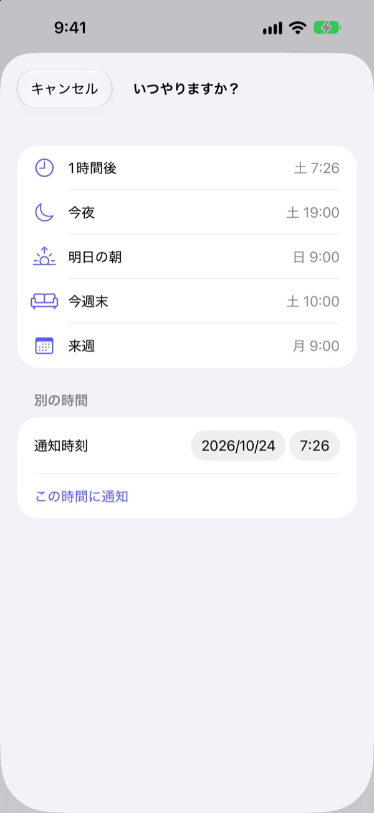

思いついたら書いて、
夜に片付ける
「あ、あれやらなきゃ」と思ったその瞬間に数文字だけ書いて、頭から手放しましょう。夜、残ったものをひとつずつ片付ければ大丈夫です。
全機能無料。アカウントもログインも不要です。

ここで試してみる
思いついたことを書くか、例をタップしてください。続けて「今すぐ片付ける」を押すと、ひとつずつ結論を出せます。
小さなことでも、頭の中では場所を取る
シャワー中、信号待ち、寝る直前に「あれやらなきゃ」が浮かびます。書く場所がないので覚えておこうと抱えたまま、今していることへの集中が少しずつ削られます。ToDoアプリはリストや期限を先に決めさせるので、書くことさえ手間になります。
3秒書いて、あとは忘れる
アプリを開いたら、画面下の入力欄にすぐ書けます。リストもフォルダも期限も選びません。
ロック画面のウィジェットをタップすると空の入力欄で開きます。Siriに Externalizeに覚えて と話しかけるか、アクションボタンに割り当てれば、アプリを開かずに書き留められます。

夜にひとつずつ片付ける
残っているものがあれば、夜9時に一度だけお知らせします。全部片付いていれば鳴りません。
片付けを始めると、ひとつずつ大きく表示されます。「今やる」「時間を決める」「捨てる」のどれかを選ぶと次へ進みます。2分で終わることなら、タイマーを動かしてすぐ済ませましょう。

ためこんで腐らせない
時間を決めるときは「1時間後」「今夜」「明日の朝」「今週末」「来週」から選ぶだけ。その時刻にまたお知らせします。通知から直接「完了」「明日の朝」「捨てる」を選べます。
1日以上残っているものや何度も先送りしたものには印がつくので、ずっと後回しにしていることが目に入ります。

始め方は3ステップ
- 1
思いついたら書く
アプリ、ロック画面のウィジェット、Siriのうち、いちばん近いところに数文字だけ。
- 2
通知を許可する
最初に書いたときに一度だけ聞かれます。夜のお知らせと、決めた時刻の通知に使います。
- 3
夜に片付ける
通知か「今すぐ片付ける」をタップして、残ったものに結論を出します。
リストからすぐできること
- 項目をタップ
- 「完了」「時間を決める」「捨てる」から選ぶ
- 右にスワイプ
- 完了（リストから消えます）
- 左にスワイプ
- 捨てる、または「あとで」で時間を決める
- 今すぐ片付ける
- 残ったものをひとつずつ大きく表示して片付ける
- Externalizeに覚えて
- Siriに話しかけて、アプリを開かずに書き留める
- 設定 ▸ 夜のお知らせ
- 時刻の変更、オフ
時間を決めるときの「今夜」は19時、「明日の朝」は9時、「今週末」は土曜10時、「来週」は月曜9時です。好きな日時を自分で選ぶこともできます。
よくある質問
アプリを開かずに書き留められますか？
はい。Siriに Externalizeに覚えて と話しかけると、何を書くか聞かれてそのまま保存されます。設定のアクションボタンに「書き留める」ショートカットを割り当てれば、ボタンひとつで書けます。
ロック画面のウィジェットはどう追加しますか？
ロック画面を長押しして「カスタマイズ」から「ロック画面」を選び、ウィジェットの枠をタップしてExternalizeを追加します。タップすると空の入力欄で開き、残りの件数も表示されます。ホーム画面には小さいウィジェットを置けます。
夜のお知らせの時刻を変えたい、オフにしたい。
右上の歯車 ▸ 夜のお知らせで、時刻の変更やオフができます。初期設定は夜9時で、残っているものがない日は鳴りません。
通知が届きません。
Externalizeの設定に通知がオフになっているという案内が出ていたら、そのボタンからiPhoneの設定で通知をオンにしてください。残っているものがない日に夜のお知らせが来ないのは正常です。
時間を決めたものはどう戻ってきますか？
決めた時刻に通知が届きます。通知を長押しすると「完了」「明日の朝」「捨てる」をその場で選べます。何も選ばなければ「頭に残っていること」に戻り、次の片付けで結論を出します。
「完了」や「捨てる」を選んだものは元に戻せますか？
いいえ。結論を出したものはリストから消え、アーカイブもありません。まだ迷っているなら、捨てずに時間を決めておきましょう。
機種変更すると内容は引き継がれますか？
いいえ。内容はこのデバイスの中だけに保存され、iCloudやサーバーには送られません。アプリを削除すると一緒に消えます。
どのデバイスで使えますか？
iOS 17以降のiPhoneで使えます。
ご質問や不具合は leeo@kakao.com までお送りください。iPhoneの機種とiOSのバージョンを書いていただけると、早く確認できます。